Il TikZ originale e quello ottimizzato hanno pixel identici nel renderer verificato. I PNG sono quelli dell’esportatore esistente; padding e bounding box fra i due formati conservano le rispettive regole originali.
A 8× il PNG 4× dispone di un campione ogni due pixel visualizzati, il PNG 1× di un campione ogni otto. Il vettoriale viene rasterizzato alla scala richiesta.
TikZ 18.223 B · PNG 4× 7068 B
TikZ 20.627 B · PNG 4× 45.781 B
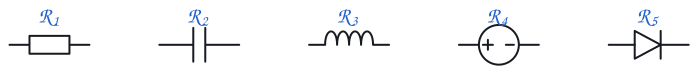
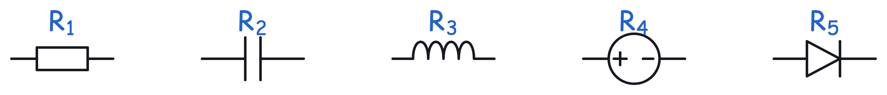
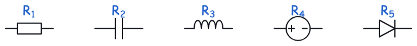
TikZ 28.347 B · PNG 4× 186.828 B
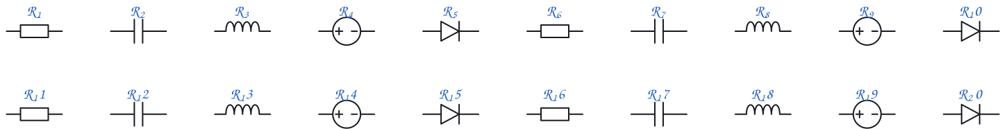
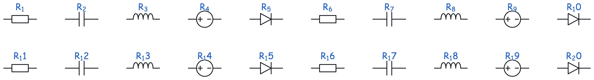
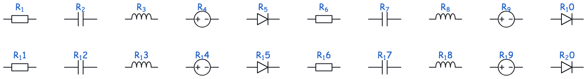
TikZ 69.461 B · PNG 4× 1.060.035 B
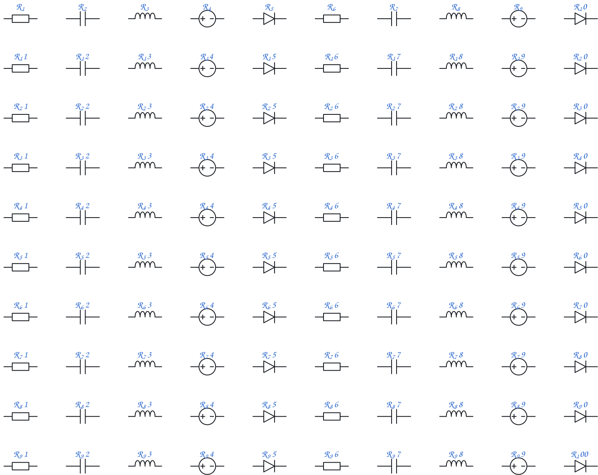
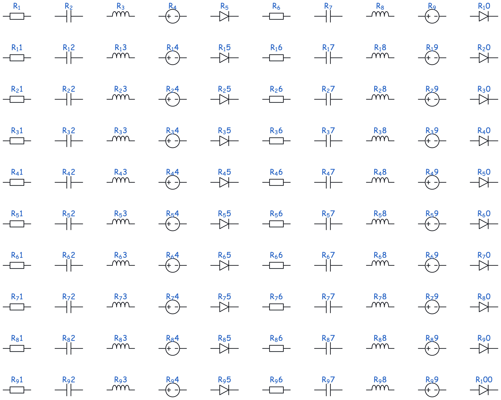
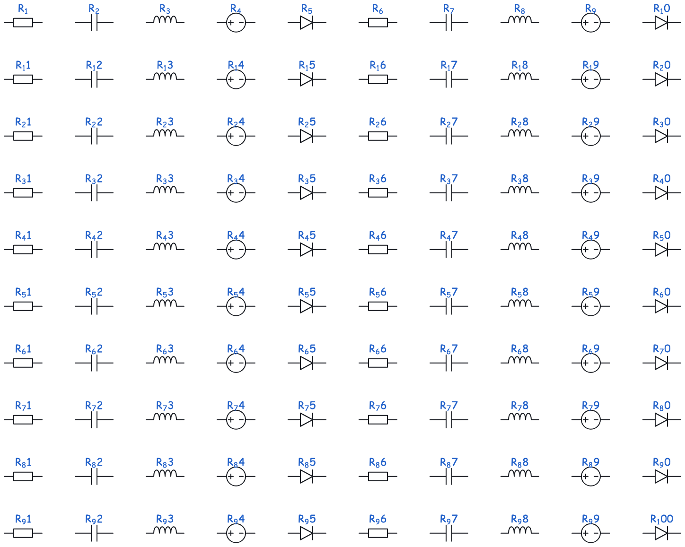
TikZ 61.058 B · PNG 4× 396.226 B
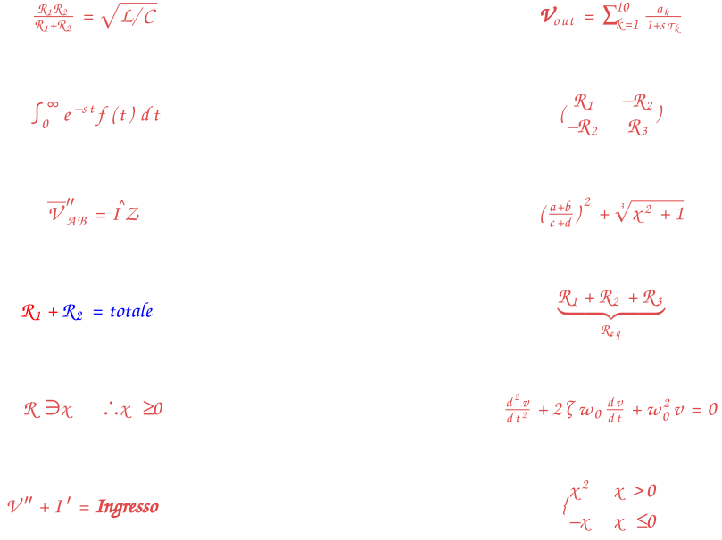
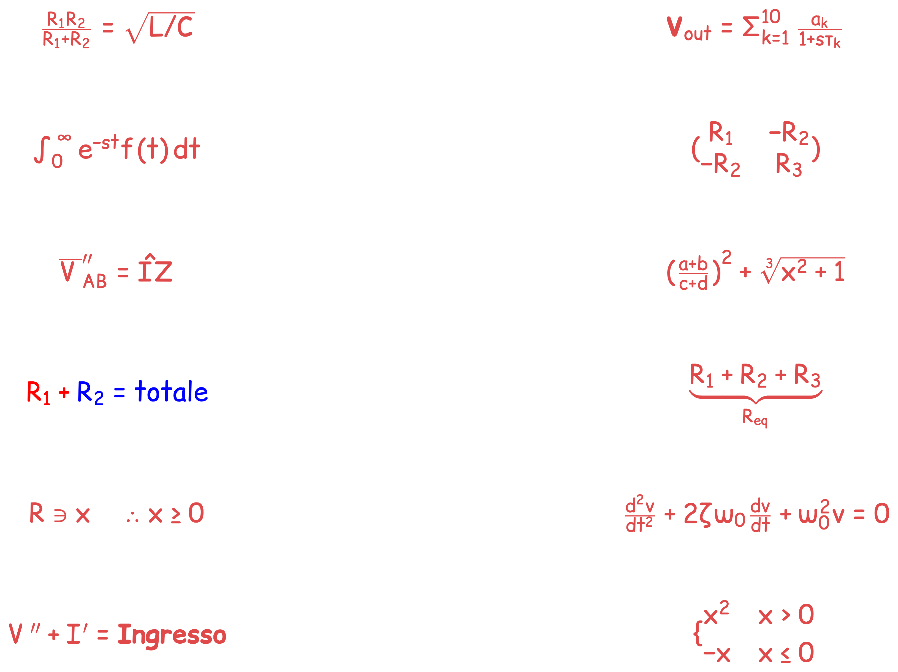
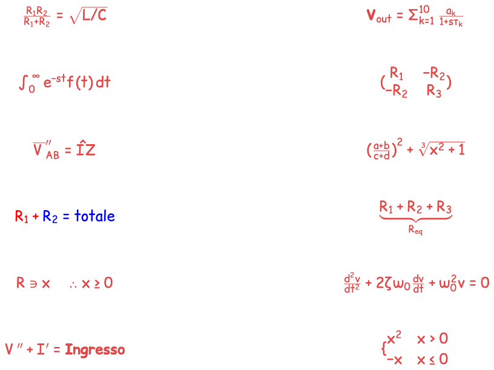
TikZ 94.265 B · PNG 4× 673.487 B
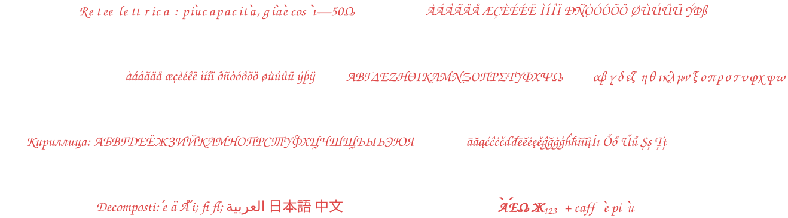
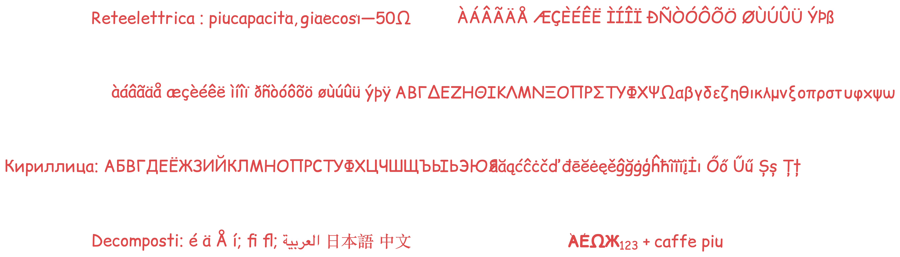
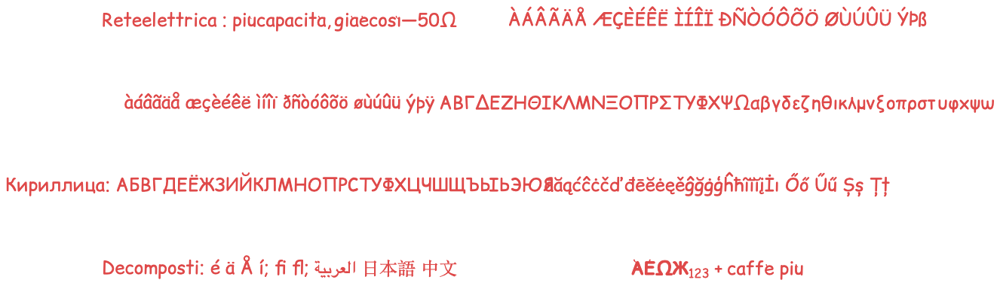
TikZ 47.028 B · PNG 4× 346.001 B
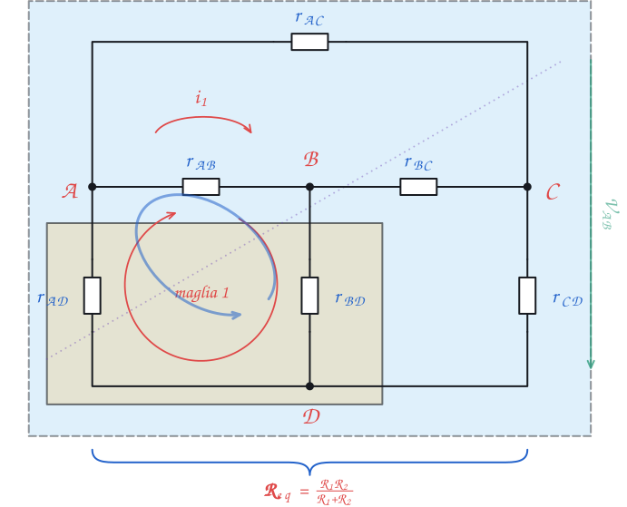
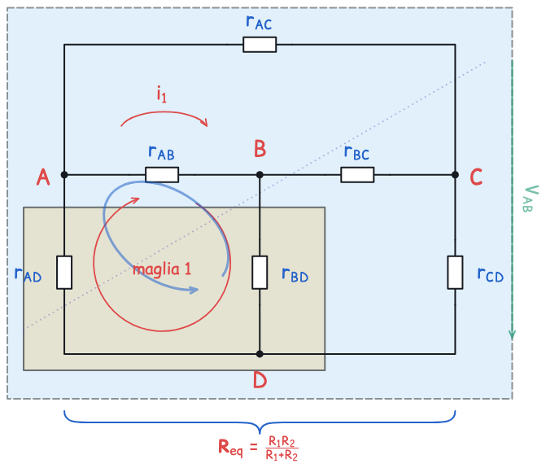